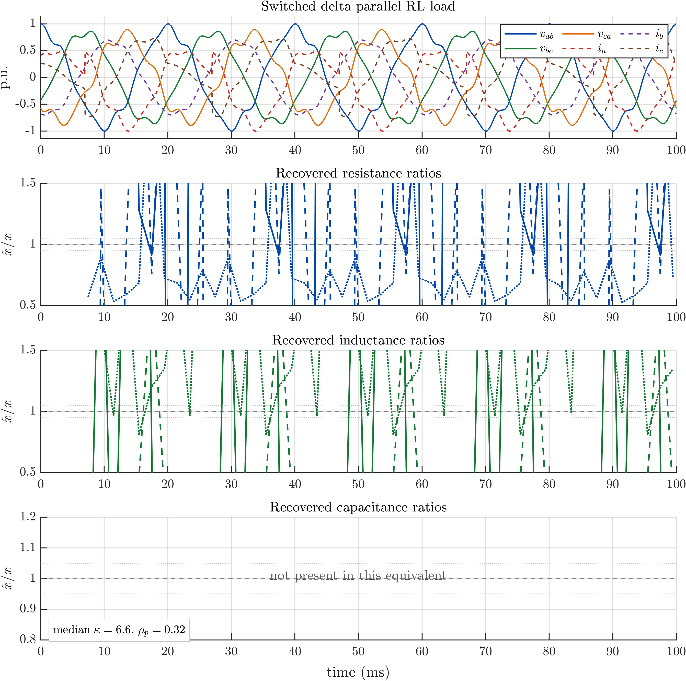

Model richness
Delta parallel and wye series cases include balanced, unbalanced, GL/RL, and RLC families.
Synthetic tests beyond the paper
The paper can only show a small number of figures. This page keeps the wider synthetic campaign visible: topology variation, imbalance, insufficient excitation, short windows, noise, quantization, gain mismatch, current delay, and combined delay-plus-noise.
The objective is not to claim that every record identifies every equivalent. The objective is sharper: when the time trajectory is informative, passive, Kirchhoff-consistent, and energetically admissible, the method recovers the selected load-equivalent parameters; when one of those conditions fails, the diagnostics should make the failure visible.
Delta parallel and wye series cases include balanced, unbalanced, GL/RL, and RLC families.
Noise, quantization, gain mismatch, filtering windows, and current delay are treated as stress cases.
Residuals and energy-admissibility checks prevent a numerical fit from being mistaken for a physical equivalent.
The base campaign contains nine synthetic three-wire records. Six are direct topology/parameter tests and three are stress tests. The fundamental-only case is deliberately included: it demonstrates that the method reduces to the simpler identifiable family instead of inventing a full RLC equivalent from a rank-deficient trajectory.
| Case | Truth | Selected equivalent | Coverage | Median condition | Energy residual | Mean parameter error |
|---|---|---|---|---|---|---|
| D-GL balanced | Delta parallel GL | Delta balanced GL | 100% | 1.02 | 1.17e-6 | 0 |
| D-GL unbalanced | Delta parallel GL | Delta full unbalanced GL | 100% | 24.07 | 2.22e-6 | 6.48e-16 |
| D-GLC + noise | Delta parallel GLC | Delta full unbalanced GLC | 100% | 31.86 | 9.17e-6 | 8.03e-5 |
| Y-RL balanced | Wye series RL | Wye balanced RL | 100% | 1.02 | 4.06e-5 | 1.22e-15 |
| Y-RLC unbalanced | Wye series RLC | Wye full unbalanced RLC | 100% | 32.48 | 3.42e-5 | 6.77e-15 |
| Y-RLC + noise | Wye series RLC | Wye full unbalanced RLC | 100% | 32.48 | 3.79e-5 | 3.41e-4 |
| D-GLC extreme | Delta parallel GLC | Delta full unbalanced GLC | 100% | 31.86 | 4.85e-6 | 1.25e-14 |
| D-GLC fundamental | Delta parallel GLC | Reduced delta GL pair | 100% | 1.45 | 5.69e-7 | not full RLC |
| D-GLC + 60 dB noise | Delta parallel GLC | Delta full unbalanced GLC | 100% | 31.86 | 2.57e-5 | 5.03e-4 |


A delta parallel RLC stress case was evaluated under several measurement-chain degradations and four window lengths. Short quarter-cycle windows are intentionally severe and often fail under noise or quantization. Longer windows recover the parameters under noise, quantization, and gain mismatch, while coherent current delay is correctly reported as physically inconsistent.
| Degradation | Window lengths | Observed behavior | Interpretation |
|---|---|---|---|
| Clean | 0.25, 0.5, 1, 2 cycles | pass all windows | Baseline numerical recovery. |
| 60 dB noise | 0.25 cycles fails; 0.5-2 cycles pass | Longer windows keep max relative error below 7.5e-4. | Noise is handled when the window contains enough information. |
| 40 dB noise | 0.25 cycles fails; 0.5-2 cycles pass | Longer windows keep max relative error near 1e-2. | Strong noise degrades accuracy but remains usable with sufficient window length. |
| Gain mismatch | 0.25, 0.5, 1, 2 cycles | pass all windows; max error about 1.4e-2. | Small sensor gain errors appear as bounded parameter bias. |
| 12-bit quantization | 0.25 cycles fails; 0.5-2 cycles pass | Longer windows keep max relative error below 1.9e-3. | Quantization is manageable when enough samples are available. |
| 50 microsecond current delay | 0.25, 0.5, 1, 2 cycles | reject all windows. | The method exposes synchronization error rather than hiding it in a false equivalent. |
| Delay plus 60 dB noise | 0.25, 0.5, 1, 2 cycles | reject all windows. | Coherent time alignment dominates the error budget. |


These plots show four aligned panels over short records: terminal voltages, terminal currents, recovered physical parameters, and diagnostics. They are deliberately not compressed into the paper because their value is visual inspection.



The full window-diagnostic file contains 2637 synthetic windows. Each row records the selected model, rank, condition number, power residual, energy residual, passivity, and adequacy flag. This table is intended for reviewers and readers who want to audit the behavior window by window rather than only through a final figure.

These files are generated summaries from synthetic campaigns. They are safe to publish because they do not contain private measurements.